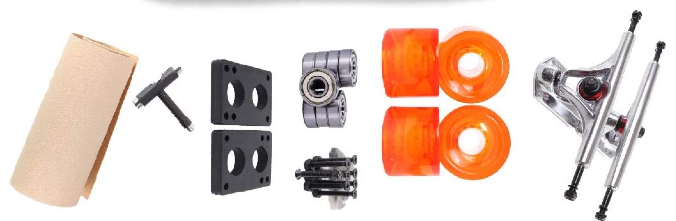

Different Longboard Components
There are three main components to a Longboard:
- The Board
- The Trucks
- The Wheels
These three components are the most vital parts, and most expensive parts of a longboard.
Longboard Deck
The deck of the longboard is the most expensive part of the longboard, and arguably the most important. The deck essentially decides how your going to use the board. The type of wood you use for you board greatly affects how it will feel when used. Using a wood like Maple provides a very stiff board, which is good for making hard turns and doing tricks on your board. Using a wood like Bamboo make the board very flexible, which is good for people who use their boards to go long distances. Sometimes a combination of both is used, providing a semi stiff board with a little bit of flex, which allows the board be more versatile in its use.
Longboard trucks
The trucks of a longboard are what connects the wheels to the board, and also allow the board to turn. The basic principle of turning on a lonboard is that if you lean one way, the trucks will turn that way. There are a few different factors to consider when looking at trucks. When going fast on a longboard, occasionally the trucks will start to wobble, making them harder to control. This is called getting speed wobbles. To counteract speed wobbles, small plastic rings called bushings are placed in the trucks. Bushings are soft and plyable, and contract as you turn to make your movements smoother and more controllable. Another factor that can improve stability at high speeds is the with of the trucks, or the "wheel base". The wider the wheel base, the more stable the board will be at high speeds.
Wheels
The wheels of a longboard are second only to the deck in importance, as they very often dictate the speed at which you will be travelling at, as well as what type of longboarding you will be doing. There are two factors that make up a wheel in longboarding: Wheel size and grip. The size of the wheel will dictate how fast you will be travelling. Larger wheels will provide more speed and grip, whilst smaller wheels will be able to turn easier and will provide less grip. The main thing that affects grip is the actual material the wheel is made of, or the "duro" of the wheel. Longboard wheels are made from urethane of various hardness. The harder the duro, the less grip you will have. you would most likely want a softer wheel whilst going at high speeds.